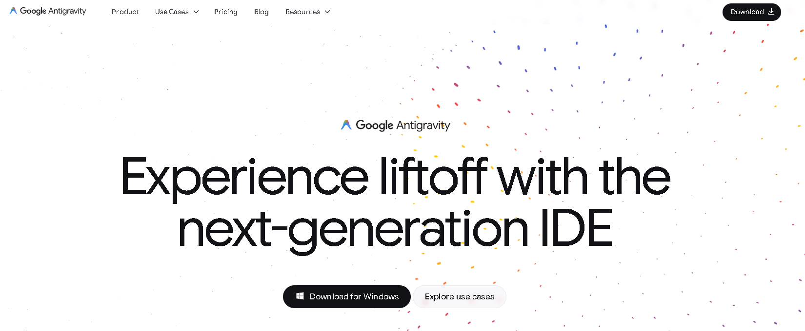
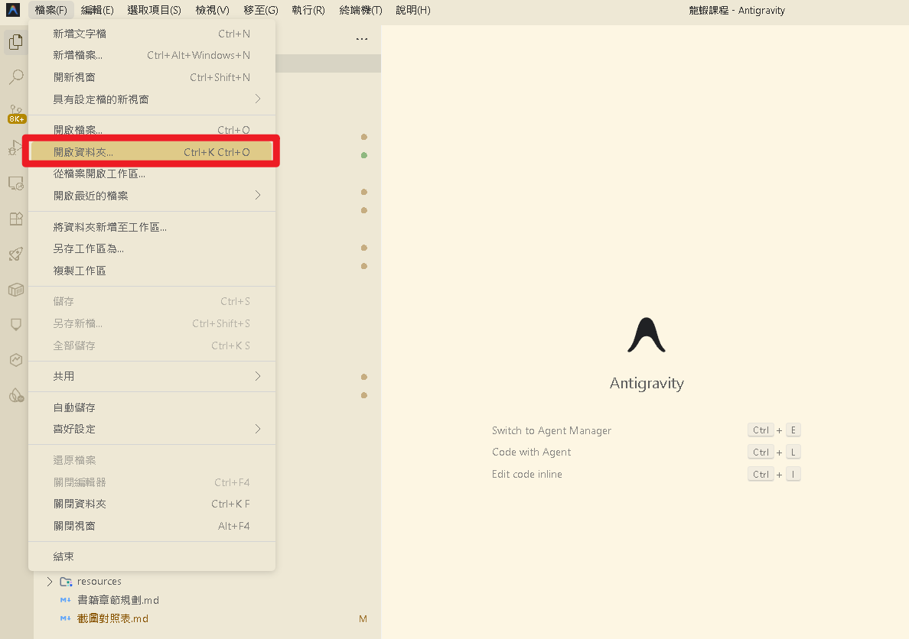
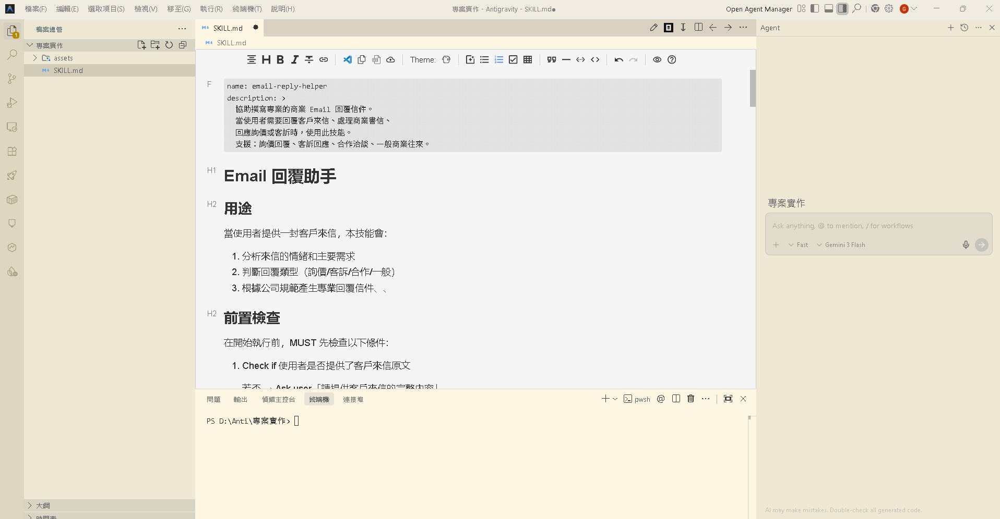
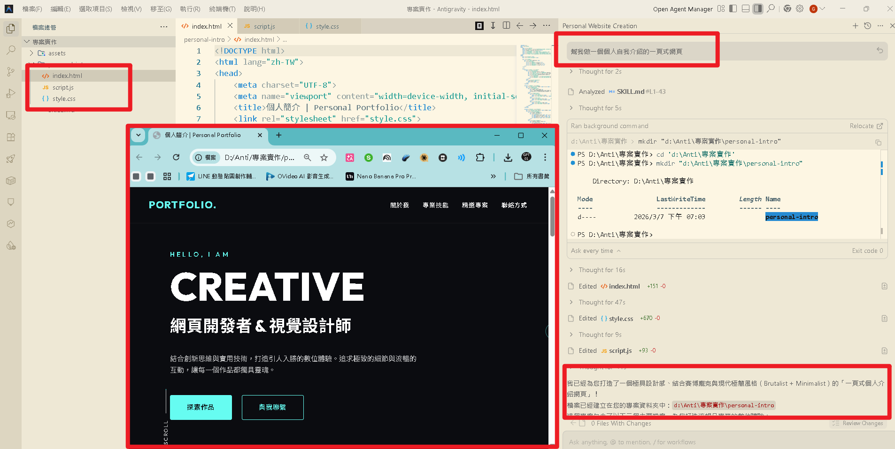
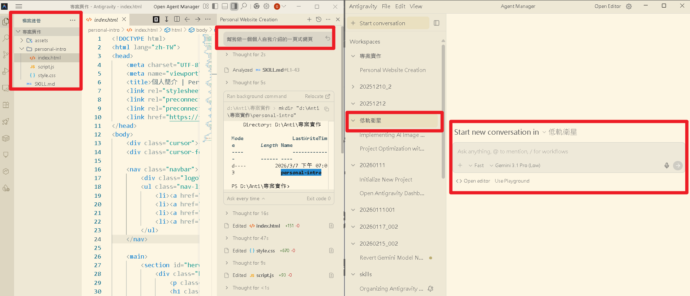

AI Agent 自主代理三王實戰
用中文描述你想要什麼，AI 幫你把整件事做完——不需要寫任何一行程式碼
這本書不是教龍蝦 AI 的嗎？為什麼要花一整章學另一個工具？
因為 Antigravity 是你安裝 OpenClaw 時的最佳除錯助手。遇到錯誤訊息時，只要貼給 AI，不到 30 秒就能找到解答——否則你可能要在 Stack Overflow 裡搜尋一小時。
Antigravity 的核心概念叫做 Agent-First：AI 代理程式是系統的核心，不是附加功能。你給 AI 一個任務，它會自己規劃、自己寫程式、自己執行、自己測試。
AI 自主規劃任務、編輯程式碼、執行指令、操作瀏覽器，你只要「驗收」。
同時派出多個 Agent 各自處理子任務——前端、後端、測試一起來！
Agent 寫完程式碼會自動啟動伺服器、開瀏覽器預覽，發現問題自己修。
| 項目 | VS Code + Copilot | Cursor | Antigravity |
|---|---|---|---|
| AI 角色 | 輔助者（幫你補全） | 協作者（你問它答） | 執行者（自主完成） |
| 程式碼補全 | ✅ | ✅ | ✅ |
| 自動執行終端機 | ✗ | 有限 | ✅ |
| 瀏覽器整合 | ✗ | ✗ | ✅ |
| 多 Agent 同時工作 | ✗ | ✗ | ✅ |
| 個人版費用 | US$10/月 | US$20/月 | 免費 |
安裝除錯、修改 JSON 設定檔、開發自訂技能、建立 Dashboard 介面
個人履歷、作品集、記帳工具、匯率換算、CSV 圖表、教學簡報
教案、學習單、線上測驗、互動遊戲、行政文書自動化
從桌面或開始選單開啟 Antigravity 桌面應用程式。如果還沒安裝，前往 https://antigravity.google/ 下載安裝。開啟後用你的 Google 帳號登入，第一次需要點「允許」授權。

介面跟 VS Code 非常像。點選上方選單 檔案 → 開啟資料夾...（快捷鍵 Ctrl+K Ctrl+O），選擇你要工作的資料夾即可。
如果還沒有專案資料夾，可以先在桌面建一個空資料夾（例如 my-first-project），然後用 Antigravity 開啟它。


┌───────┬────────────────────────┬──────────────┐ │ │ │ │ │ ① 側 │ ② 編輯區 │ ③ AI 面板 │ │ 邊 │ （寫程式碼的地方） │ （跟AI對話） │ │ 欄 │ │ │ │ │ │ │ │ ├────────────────────────┤ │ │ │ ④ 終端機面板 │ │ │ │ （執行指令的地方） │ │ └───────┴────────────────────────┴──────────────┘
最左邊那排圖示。檔案總管（Ctrl+Shift+E）、搜尋（Ctrl+Shift+F）、版本控制（Ctrl+Shift+G）。
畫面正中央、佔最大面積。看程式碼、寫程式碼的地方，上方有分頁標籤。
右側面板，跟 AI 對話的地方。按 Ctrl+L 開啟（Code with Agent）。這是 Antigravity 跟傳統編輯器最大的不同。
下方黑色區域。AI 會自動在這裡執行指令。按 Ctrl+` 可以開啟/關閉。
你不需要全部背起來，但以下幾個建議記住，操作會快很多：
| 功能 | 快捷鍵 | 什麼時候用 |
|---|---|---|
| Code with Agent | Ctrl+L | 開啟 AI 面板跟 AI 對話 |
| Agent Manager | Ctrl+E | 切換到多 Agent 管理模式 |
| Edit code inline | Ctrl+I | 在編輯區內直接讓 AI 修改程式碼 |
| 命令面板 | Ctrl+Shift+P | 找不到某功能時的萬用搜尋 |
| 開啟資料夾 | Ctrl+K Ctrl+O | 開啟或切換專案資料夾 |
| 開啟終端機 | Ctrl+` | 想看或執行指令時 |
| 儲存檔案 | Ctrl+S | 修改完檔案後 |
Ctrl+Shift+P 打開「命令面板」，用中文或英文搜尋想做的事（例如「terminal」或「AI」），就能找到對應功能。命令面板是你的萬用搜尋工具！
Ctrl+L（AI 對話）、Ctrl+E（多 Agent 管理）、Ctrl+I（行內修改）。記住這三個就夠日常使用了。
我們要用 AI 製作一個個人自我介紹網頁——不需要寫任何一行程式碼，全部用中文交給 AI。
按 Ctrl+L 開啟右側的 AI 面板，你會看到一個對話輸入框。
請幫我建立一個個人自我介紹網頁，包含以下內容： - 名字：王小明 - 職業：國小老師 - 興趣：攝影、旅行、做菜 - 一句話座右銘：「用 AI 讓教學更有趣」 - 設計風格：簡潔現代，藍白配色 - 要有一張佔位的大頭照區域 - 底部要有 Email 聯絡方式 請建立 index.html 和 style.css 兩個檔案。
AI 會自動分析需求、建立檔案、撰寫程式碼、執行測試。整個過程 30 秒到 1 分鐘，你只需要在旁邊看。完成後用內建瀏覽器預覽成果：

Editor View 是一對一合作。但如果任務複雜涉及多個部分，一個 Agent 排隊做太慢了——Manager View 讓你同時派出多個 Agent，各自處理不同任務！
| 情境 | 一個 Agent | 多個 Agent |
|---|---|---|
| 做一個簡單的網頁 | ✅ 足夠 | 不需要 |
| 同時做前端和後端 | 要排隊做 | ✅ Agent A 前端、Agent B 後端 |
| 同時建立三個頁面 | 要一個一個做 | ✅ 三個 Agent 同時做三頁 |
| 一邊寫程式一邊寫測試 | 做完程式再寫測試 | ✅ 一個寫程式、一個寫測試 |
按 Ctrl+E 切換到多 Agent 管理模式。介面會從編輯器變成類似「任務看板」的畫面，每個 Agent 有自己的卡片。

style.css），偶爾會產生衝突。建議在任務描述中明確指定每個 Agent 負責哪些檔案。
AI 面板輸入框下方有兩個重要的下拉選單：
AI 先規劃步驟，再逐步執行。適合複雜任務、深度研究、多步驟協作。
AI 直接執行任務，不做事前規劃。適合簡單修改、一句話能說清的需求。
| 模型 | 提供商 | 特色 | 費用 |
|---|---|---|---|
| Gemini 3 Flash | 預設模型，回應最快 | 免費 | |
| Gemini 3.1 Pro (High/Low) | 最新旗艦，推理更強 | 免費（有額度） | |
| Claude Sonnet / Opus 4.6 | Anthropic | Thinking 思考鏈，程式碼品質最好 | 需 API Key |
| GPT-OSS 120B | OpenAI | 開源大模型，均衡表現 | 需 API Key |
按 Ctrl+L。還是沒有？按 Ctrl+Shift+P 搜尋「AI」或「Agent」。
Gemini 免費額度有上限，被限速就等隔天，或切換到其他模型。
直接告訴 AI 問題所在：「文字跑出邊界」「圖片沒置中」，它會自動修正。
按 Ctrl+Z 逐步撤銷。改動太多回不去，用版本控制（Git）恢復。
Antigravity 不是程式碼補全工具，而是能自主完成整個開發任務的 AI 團隊。
側邊欄、編輯區、AI 面板、終端機——記住 Ctrl+L 開啟 AI 面板就夠了。
用幾句中文就能讓 AI 做出完整網頁。修改也只要用中文描述即可。
多 Agent 同時工作，各自處理不同子任務，開發速度翻倍。
📖 下一章預告：CH3 Claude Code 終端機特助
如果說 Antigravity 是有圖形介面的 AI 工程師，Claude Code 就是住在終端機裡的 AI 特助——沒有花俏畫面，但做事又快又精準。特別在檔案操作、Git 版本控制方面，Claude Code 甚至更勝一籌！